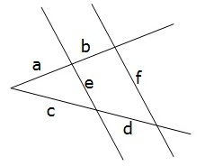
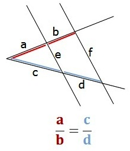
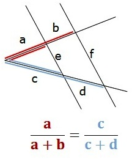
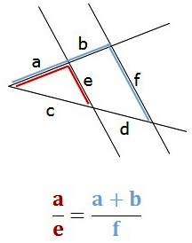
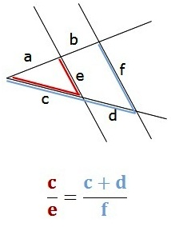
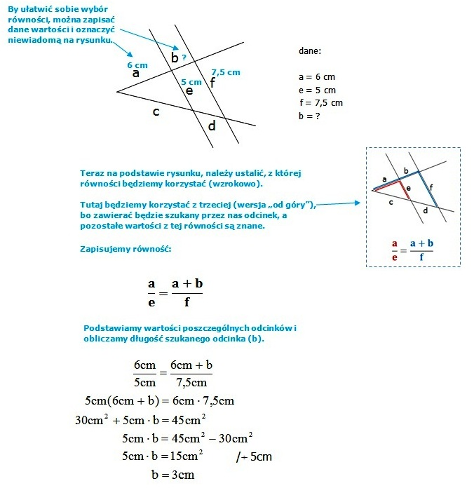

TWIERDZENIE TALESA
Twierdzenie Talesa odnosi siê do sytuacji, w której ramiona k±ta przetniemy dwoma prostymi równoleg³ymi.

Wtedy d³ugo¶ci odpowiednich odcinków wyznaczonych przez te proste na jednym ramieniu k±ta, s± proporcjonalne do d³ugo¶ci odpowiadaj±cych im odcinków, wyznaczonych przez te proste na drugim ramieniu k±ta.
Twierdzenie to wydaje siê do¶æ mêtne.
W praktyce oznacza, ¿e mo¿emy zapisaæ 3 podstawowe równo¶ci (nie potrzeba wiêcej, bo inne s± w rzeczywisto¶ci "wersjami" jednej z tych 3). Naj³atwiej zapamiêtaæ je wzrokowo. III równo¶æ mo¿na zapisaæ dla dwóch "zestawów" odcinków (od góry lub od do³u)
|
I RÓWNO¦Æ

|
II RÓWNO¦Æ

|
|
III RÓWNO¦Æ
|
-Od góry

|
-Od do³u

|
|
Gdy mamy do wyliczenia zadanie, w którym musimy siê oprzeæ na twierdzeniu Talesa, sami decydujemy, z której z 3 wy¿ej przedstawionych równo¶ci bêdziemy korzystaæ.
Wybór jest uzale¿niony od tego, które odcinki mamy dane i który odcinek mamy do obliczenia, tak by uzyskane równanie mia³o dok³adnie jedn± niewiadom±, która jest d³ugo¶ci± szukanego przez nas odcinka.
Przyk³ad:
K±t przeciêto prostymi równoleg³ymi (rysunek podano poni¿ej). Oblicz d³ugo¶æ odcinka b, je¿eli a = 6 cm, e = 5 cm, f = 7,5 cm:
